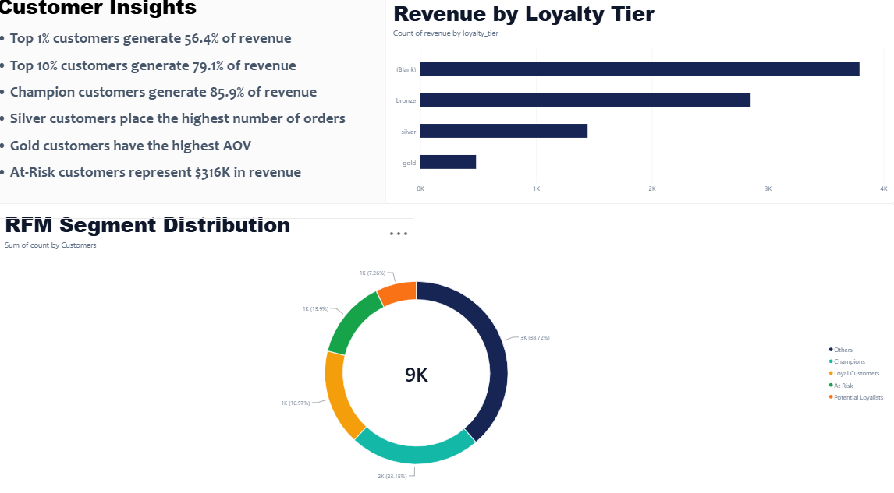
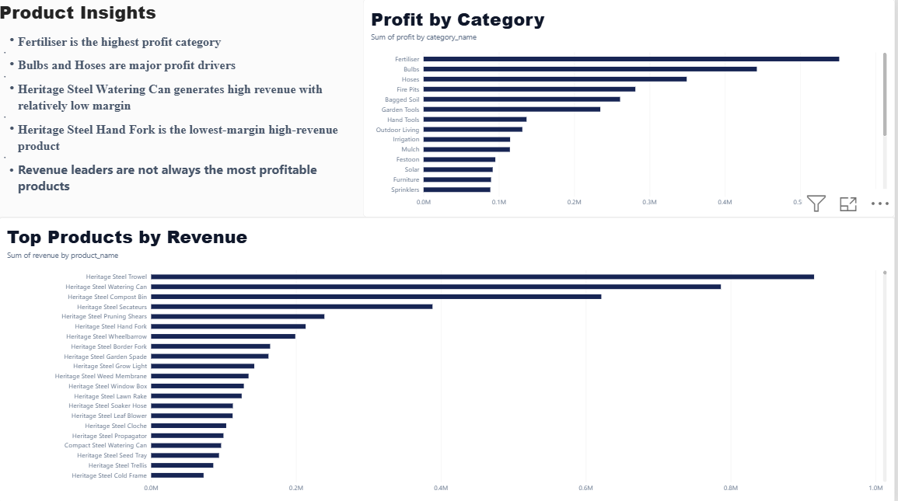

Move from raw transactions to decisions.
The dataset contained customers, orders, order items, products, categories, payments and returns. The goal was to build a reliable analytical layer and answer practical questions about revenue, profitability, customers, products, geography and returns.
Questions investigated
- Which categories drive the most profit?
- Which products generate high revenue but mediocre profit?
- Does loyalty tier affect customer value?
- Which countries generate the most revenue and profit?
- What is the impact of returns on revenue?
Validate before visualising.
The workflow included data profiling, null and duplicate checks, relationship validation, record-level spot checks and financial validation.
The public analytical layer also excludes customer PII. Raw customer-level source files are not included in the public repository.
Python → DuckDB → SQL → Power BI.
Python/Pandas handled profiling and validation. DuckDB provided the analytical storage layer. SQL views were built for sales, customer, product, category and channel metrics, including revenue, cost, profit, margin, AOV, orders and units.
Customer concentration
The analysis found substantial revenue concentration: the top 1% of customers accounted for 56.43% of revenue, the top 5% for 72.35%, and the top 10% for 79.08%.
RFM segmentation
RFM analysis grouped customers into segments including Champions, Loyal Customers, Potential Loyalists and At Risk. Champions generated $7.75M, or 85.87% of revenue. The At Risk segment represented $315,964, or 3.50%.
Other findings
- Top profit categories included Fertiliser, Bulbs, Hoses, Fire Pits and Bagged Soil.
- Several high-revenue products showed comparatively weaker margins, including Heritage Steel Watering Can, Hand Fork and Secateurs.
- GB, US and CA were the leading markets in the analysis.
- Revenue showed notable spikes in November and December.
- Returns totalled 12,000 with $498K in refunds, a 5.52% refund rate.
Three pages, one decision story.
The final report was intentionally kept to three pages: Executive Overview, Customer Analytics and Product Analytics. A fourth page was removed because it did not add enough analytical value.



What this project does not claim.
- RFM segmentation was used; cohort analysis was not performed.
- The project does not claim causal relationships from descriptive patterns.
- The public repository excludes raw customer-level source files and PII.
- SQL techniques are described only where they were actually implemented in the analysis.